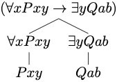
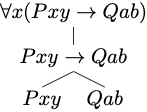

The language of quantificational logic will afford the means to capture the validity of a variety of arguments for which propositional logic appears to be inadequate. We specify:
a syntax for the language, which will include a vocabulary and a set of grammatical rules designed to specify which expressions are formulas of the language, and
a semantics for the language, which will explain how to interpret the expressions and formulas of the language and define what is for a formula to be true under a given interpretation.
We begin with the vocabulary of quantificational logic.
Vocabulary
The vocabulary of quantificational logic contains six types of symbol:
These are the lowercase letters \(a\), \(b\), \(c\), \(d\), and \(e\) with or without numerical subscripts:
\[ a, b, c, d, e \]
These are uppercase letters \(P\), \(Q\), \(R\), \(S\), and \(T\) with or without numerical subscripts.
\[ P, Q, R, S, T \dots \]
These are lowercase letters \(x\), \(y\), and \(z\) with or without numerical subscripts:
\[ x, y, z \dots \]
These are the symbols: \[ \neg, \vee, \wedge, \to \]
There are two quantifier expressions: \[ \forall, \exists \] Parentheses
There are two parentheses: \[ ), ( \]
Nothing else is a symbol of the language.
Grammar
The grammar of quantificational logic explains how to combine these symbols into formulas of the language. We proceed in two stages.
If \(P\) is a predicate with \(n\) argument places, and each of \(\tau_1, \dots, \tau_n\) is a constant or a variable, then \[ P\tau_1, \dots, \tau_n \] is an atomic formula.
Atomic formulas are the formal counterparts of simple predications such as ‘Los Angeles is a city’ or ‘Los Angeles is between San Diego and San Francisco’.
Example 7.1 Each of the expressions below is an atomic formula of quantificational logic: \[ \begin{array}{c} Pxy\\ Qabx\\ Rxaby_3\\ \dots \end{array} \]
Atomic formulas provide simple constituents for more complex formulas.
We now define what is for an expression to be a formula of quantificational logic.
We proceed to illustrate the characterization of formula through concrete examples.
 The construction tree depicts the construction of the formula from simpler constituents.
Example 7.2 The expression below is a formula of quantificational logic: \[ (\forall x Pxy \to \exists y \ Qab) \]
By rule 2, \((\forall x Pxy \to \exists y \ Qab)\) is a formula if \(\forall x \ Pxy\) and \(\exists y \ Qab\) are each a formula.
By rule 3, \(\forall x \ Pxy\) is a formula if \(Pxy\) is a formula.
By rule 3, \(\exists y \ Qab\) is a formula if \(Qab\) is a formula.
By rule 1, each \(Pxy\) and \(Qab\) are formulas, since they are each atomic formulas.
Therefore, we conclude that \((\forall x Pxy \to \exists y \ Qab)\) is a formula of quantificational logic.
 The construction tree depicts the construction of the formula from simpler constituents.
Example 7.3 The expression below is a formula of quantificational logic: \[ \forall x (Pxy \to Qab) \]
By rule 3, \(\forall x (Pxy \to Qab)\) is a formula if \((Pxy \to Qab)\) is a formula.
By rule 2, \((Pxy \to Qab)\) is a formula if each \(Pxy\) and \(Qab\) are formulas.
By rule 1, each \(Pxy\) and \(Qab\) are formulas, since they are each atomic formulas.
Therefore, we conclude that \(\forall x (Pxy \to Qab)\) is a formula of quantificational logic.
We now make a distinction between two types of occurrences of a variable in a formula. In the formula \(\forall x (Qxy \to Ryx)\) the last two occurrences of the variable \(x\) match the variable accompanying the quantifier expression, whereas the occurrences of the variable \(y\) do not. The occurrences of the variable \(x\) have been captured by the initial quantifier, but the occurrences of the variable \(y\) remain free.
Free Occurrences
We define what is for an occurrence of a variable to be free in a formula:
Example 7.4 The first two occurrences of the variable \(x\) occur free in the formula: \[ Px \to (Qxy \to \forall x Rxx) \]
By rule 1, \(x\) occurs free in \(Px\), which is an atomic formula, and, by rule 3, the occurrence remains free when it occurs in a conditional of the form \(Px \to \psi\).
By rule 1, \(x\) occurs free in \(Qxy\), which is an atomic formula, and, by rule 2, the occurrence remains free when it occurs in a formula of the form \((Qxy \to \psi)\).
By rule 2, the last two occurrences of \(x\) in \(\forall x Rxx\) are not free.
An occurrence of a variable is free when it has not been captured by a quantifier. In the last example, the last two occurrences of the variable \(x\) are under the scope of the universal quantifier \(\forall x\), whereas the first two occurrences of the variable are not under the scope of a quantifier.
Bound Occurrences
An occurrence of a variable in a formula is bound if, and only if, it is not free in that formula.
A variable occurs freely in a formula if, and only if, some of its occurrences in the formula are free.
Open and Closed Formulas
A formula is open if, and only if, some variables occur freely in the formula. Otherwise, the formula is closed.
Example 7.5 The formula below is open: \[ (\forall x \exists y Rxy \vee Qyx) \] This is because the last occurrences of the variables \(y\) and \(x\) are free in the formula.
Example 7.6 The formula below is closed: \[ \forall x \exists y (Rxy \vee Qyx) \] The difference with respect to the last formula is that all occurrences of the variables \(y\) and \(x\) are now captured by the quantifiers \(\exists y\) and \(\forall x\), respectively.
We may remove the outer parentheses from a formula that is not part of another formula.
Notice that this convention will not allow us to omit the parentheses in a formula such as: \[ \forall x (Rxa \to Rax). \] For \((Rxa \to Rax)\) is here part of the formula \(\forall x (Rxa \to Rax)\). Such a formula is importantly different from: \[ (\forall x Rxa \to Rax). \] The former formula is a closed formula whereas the latter is an open formula, since the last occurrence of the variable \(x\) is free in \((\forall x Rxa \to Rax)\) as it is not in the scope of the universal quantifier \(\forall x\).
Example 7.7 We are able to use the expression \[ \forall x Rxa \to Rax \] is an abbreviation for the formula \[ (\forall x Rxa \to Rax) \]
Determine whether each of the following expressions is an atomic formula of quantificational logic.
\(\neg Rxy\)
\(Rxy\)
\(Aabx\)
\(Qe\)
\(Pxyza\)
\(RPa\)
Determine whether each of the following expressions is a formula of quantificational logic.
\(\neg \neg Rxy\)
\((Pa \to (Axy \wedge \exists x Qx)\)
\(\forall x Ryy\)
\(\exists x y (P \wedge P(y))\)
\(\forall \forall x Ryx\)
\(\exists x \exists y Rxy\)
Determine whether each of the following expressions is an abbreviation for a formula of quantificational logic.
\(\exists x \exists y Rxy \to Px\)
\(\forall x Rx \vee \exists y Qyy\)
\(Px \wedge Qx \vee Rxy\)
\(Px \wedge Qx \to Rxy\)
\(\exists x Px \wedge \exists y Qy \wedge \exists z Rz\)
\(\exists x \forall y \exists z (Px \wedge Qy \wedge Rxyz)\)
Determine whether the following formulas contain a free occurrence of the variable \(x\).
\(\forall x (Rxy \wedge Ryx)\)
\(\forall x Rxy \wedge Ryx\)
\(\exists x (Px \wedge Qx) \to \forall y Rxy\)
\(\forall x \exists y Rxy \to \exists x \forall y Ryx\)
\(\forall x \exists y Rxy \to \forall y Ryx\)
\(\forall x (\exists y Rxy \to \forall y Ryx)\)
Determine whether the following formulas are open or closed. Justify your answers.
\(\forall x Rxy \wedge Ryxz\)
\(Rab\)
\(\exists x (Pax \wedge Qxa) \to \forall y Rxy\)
\(\forall x Ryy\)
\(\forall x \exists y \forall z Rxyx\)
\(Rax \to \forall x Rxx\)